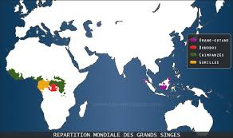

Ou ils habitent

Il y a des singes partout a travers le monde
Types d'environnements
- - Les forets tropycales humides
- - Les savanes et zones boisées
- - Les forets de haute altitude
Les habitats dépendent de l'espèce
- - Un exemple sont les gorilles qui habitent dans les forets de hautes altitudes en Afrique
- - Un autres exemple sont les orang-outans qui vivent principalement dans les basses terres des forêts tropicales de Bornéo et de Sumatra.